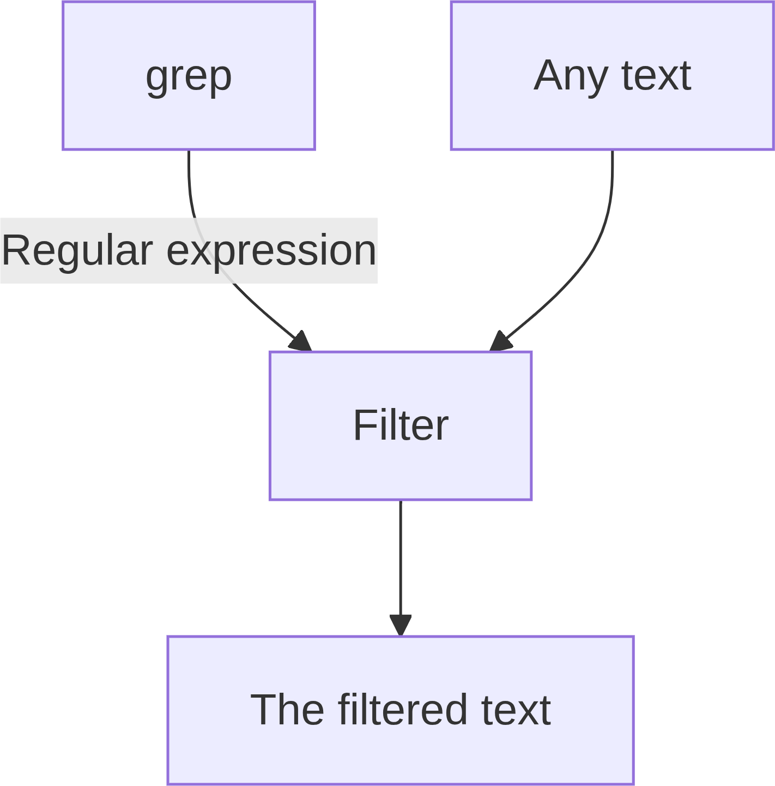

Regular expressions and grep¶
Need a video?
Learning outcomes
- Learners know there are multiple flavours of regular expressions
- Learners can use
.,*,+,?,[],[^],{},()in regular expressions - Learners can use
grep - Learners have practiced using the
grepmanual - Learners can use
grepto search for a regular expression - Learners can send text to
grepusing a pipe - (optional) Learners have seen the flexibility of
grep
For teachers
Lesson plan:
| Time | Minutes | Duration | Description |
|---|---|---|---|
| 10:20-10:30 | 0-10 | 10 | Prior |
| 10:30-10:35 | 10-15 | 5 | Present |
| 10:35-10:55 | 15-35 | 20 | Challenge |
| 10:55-11:05 | 35-45 | 10 | Feedback and conclusion |
Prior:
- How would tell an alien how a human name is made up out of English characters?
- And a human phone number?
- Are there more things that have certain features like that?
- What is a regular expression?
- What is
grep? - What is GNU?
- In the context of software, what is a parser?
- In the context of command-line tools, what is a filter?
Why use regular expressions?¶
Regular expressions are used to filter for text that contains a pattern, such as a first name, a last name, a phone number, etc.

Why use grep?¶
The tool grep comes installed with Linux.
Exercises¶
Exercise 1: use the grep manual¶
In this exercise, we’ll use the grep manual.
Exercise 1.1: view the grep manual¶
View the grep manual.
Tip: man is the command to view a manual.
Exercise 1.2: what does grep do?¶
According to the grep manual, in a one-liner, what does grep do?
Tip: it is at the top.
Answer
grep is a tool to ‘print lines that match patterns’
It is in the fourth line:
Exercise 1.3: what are the other greps?¶
In the fourth line of the grep manual, the
grep-like tools egrep, fgrep and rgrep are mentioned.
What are these?
Tips:
- it is in the first two screens.
- The first part of the answer can be found
in the
DESCRIPTIONsection, - The second part of the answer can be found
in the
OPTIONS | Pattern syntaxsection
Answer
The first part of the answer is in the description:
DESCRIPTION
grep searches for PATTERNS in each FILE. [...]
[...]
Debian also includes the variant programs egrep, fgrep and rgrep. These programs
are the same as grep -E, grep -F, and grep -r, respectively.
[...]
Searching for -E, -F and -r takes us to the
‘OPTIONS | Pattern Syntax’ subsection:
Pattern Syntax
-E, --extended-regexp
Interpret PATTERNS as extended regular expressions [...].
[...]
-G, --basic-regexp
Interpret PATTERNS as basic regular expressions [...].
-P, --perl-regexp
Interpret PATTERNS as Perl-compatible regular expressions [...].
We can conclude from this that the different greps have different types
of regular expressions, such as a regular, extended and Perl-compatible
regular expressions.
Exercise 2: use grep with a pipe¶
In this exercise, we use grep with a pipe.
Exercise 2.1: read a command that has a grep with a pipe¶
How would you explain the command below in English? Use ‘some regular expression’ if you see a regular expression.
Answer
The manual of grep, send it to grep and let it filter for
some regular expression.
Exercise 2.2: run a command that has a grep with a pipe¶
Run the command above. What does it show on screen? What did that regular expression do?
Answer
This is what is shown on screen:
$ man grep | grep "^[A-Z]"
GREP(1) User Commands GREP(1)
NAME
SYNOPSIS
DESCRIPTION
OPTIONS
REGULAR EXPRESSIONS
EXIT STATUS
ENVIRONMENT
NOTES
COPYRIGHT
BUGS
EXAMPLE
SEE ALSO
GNU grep 3.11 2019-12-29 GREP(1)
It shows all lines that start with an uppercase character.
Exercise 3: practice regular expressions¶
Go to https://www.regexone.com/ and do lessons 1 to (and including) 11.
Overview of these lessons
Here is an overview of the regular expression patterns in each lesson:
| Lesson | Pattern |
|---|---|
| 1 | None |
| 1.5 | \d |
| 2 | . |
| 3 | [] |
| 4 | [^] |
| 5 | [A-Z] |
| 6 | {} |
| 7 | * (Kleene star) and + (Kleene plus) |
| 8 | ? |
| 9 | \s |
| 10 | ^ |
| 11 | () |
(optional) Exercise 4: can grep do …?¶
Here we’ll experience the flexibility of grep.
Pick those topics you are interested in.
(optional) Exercise 4.1: Can grep do a case-insensitive match?
Can grep do a case-insensitive match?
The answer is: yes!
Use the grep manual to answer this question.
Answer
Yes.
The --ignore-case allows you
to let grep do a case-insensitive search.
For example, in the command below, the word ‘options’ is searched in the manual in a case-insensitive manner.
$ man grep | grep --ignore-case "options"
OPTIONS
use -i, to cancel its effects because the two options override each other.
options that prefix their output to the actual content: -H,-n, and -b. In
options are given, the last matching one wins. If no --include or
--exclude options match, a file is included unless the first such option
Other Options
other GNU programs. POSIX requires that options that follow file names
must be treated as file names; by default, such options are permuted to
the front of the operand list and are treated as options. Also, POSIX
requires that unrecognized options be diagnosed as “illegal”, but since
treats expansions of “*g*.h” starting with “-” as file names not options, and the
(optional) Exercise 4.2: Can grep show the lines that do not match?
Can grep show the lines that do not match?
The answer is: yes!
Use the grep manual to answer this question.
(optional) Exercise 4.3: Can grep detect lines in multiple files?
Can grep detect lines in multiple files?
The answer is: yes!
Use the grep manual to answer this question.
(optional) Exercise 4.4: Can grep detect which files contain a match?
Can grep detect which files contain a match?
The answer is: yes!
Use the grep manual to answer this question.
Answer
Yes.
The --files-with-matches allows you to let grep
output which files contained a match.
For example, in the commands below,
the folder /etc is searched for files that contain the text ‘ubuntu’,
showing the files in which a match is found:
(optional) Exercise 4.5: Can grep detect which files-with-a-certain-extension contain a match?
Can grep detect which files-with-a-certain-extension contain a match?
The answer is: yes!
Use the grep manual to answer this question.
For teachers
How many regular expression dialects exist?
Answer
At least 3:
grep(basic)egrep(extended)pgrep(Perl-like)
We have sent the grep manual to grep using a pipe.
Can we use any text?
Answer
Yes: the grep manual is just text like any other.
Can we send the output of grep to grep?
Answer
Yes: the grep output is just text like any other.
What is a Kleene star and what does it do?
Answer
The Kleene star is the regular expression pattern *.
In English it would be read as: ‘the thing before it
repeated at least zero times’.
What is the difference between [^A-Z] and ^[A-Z]?
Answer
The first regular expression means: ‘All characters, except all uppercase letters’.
The second regular expression means: ‘At the start of a line, any uppercase letter’.
What is regular expression for ‘any line of text’ (including empty ones)?
Answer
The regular expression for ‘any line of text’ is .*,
as . means ‘Any character’ and * means ‘repeated at least zero times’.
Why does man grep | grep .* not work, where man grep | grep ".*" does?
Answer
The double-quotes assure that the regular expression patter .* is
read as such.
The ‘naked’ .* is a bash expression of ‘all hidden files’,
as hidden files start with a . (e.g. ls .*).
This meaning can change depending on context (e.g. cat .*).
Knowing that grep --ignore-case ignores case, and grep --invert-match
inverts the match (i.e. showing non-matching lines), how to combine these
in the same command?
Conclusions¶
Conclusions
grepis used for pattern matchinggrephas a useful manualgrepis a filtergrepworks well with pipes- There are multiple regular expression dialects
- The pattern
.,[]and[^]are used to (not) match a (set of) characters - The pattern
*,+,?and{}are used to indicate an amount - The pattern
()is used to capture a set of a match - (optional)
grepcan do a lot of different things
Next session¶
Next session
grepis not a programming language: useawkinstead.